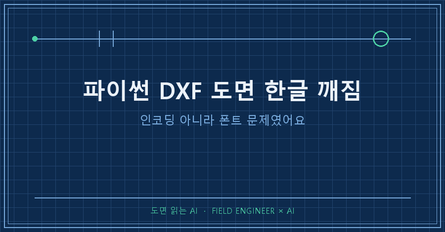
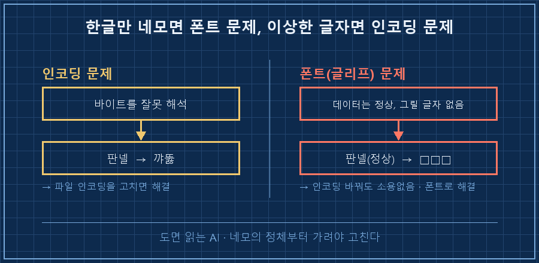
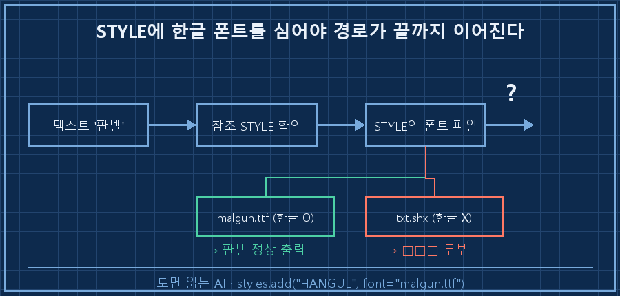

AI한테 "이 제어 도면 파이썬으로 그려줘"라고 시켰어요.
잠시 뒤 열어본 DXF 파일엔 글자 자리마다 □□□가 줄줄이 박혀 있더라고요.
치수도, 태그 이름도, 죄다 두부 모양 네모.
결론부터 말할게요.
이건 인코딩(글자 깨짐) 문제가 아니라, 폰트에 한글 글리프가 없어서 생기는 문제예요. 그래서 파일을 UTF-8로 다시 저장해봤자 안 고쳐져요.
해결은 딱 하나, 도면 텍스트 스타일에 한글 트루타입 폰트를 심어주는 거예요.
제 본업은 수소 설비 제어예요 — 판넬 설계, PLC 로직, 현장 커미셔닝.
요즘은 반복되는 도면 작업을 AI한테 파이썬 스크립트로 짜서 맡기는데, 그 과정에서 이 두부 깨짐에 제대로 한번 당했어요.
그것도 사람들 앞에서 라이브로 도면을 뽑아 보이던 자리에서요.
이 글은 그날 이 문제를 뜯어보고 규칙으로 박은 기록이에요. (전제: Windows + Python + ezdxf 라이브러리 기준, 2026년 7월 확인.)
1. 증상: AI가 그려준 도면에 한글이 죄다 □□□로 떴어요
가장 많이들 겪는 장면이에요. DXF는 멀쩡히 열리는데, 한글만 네모나 물음표로 보이는 경우죠.
영문·숫자는 정상이고 한글만 골라서 깨지면, 원인은 거의 정해져 있어요.
제가 겪은 건 이랬어요. AI가 짜준 스크립트로 도면을 뽑았더니, CAD에서도 미리보기에서도 한글 텍스트가 전부 두부였어요.
정상 : PLC 판넬 배치도 (영문·숫자만 있을 때)
깨짐 : □□□ □□□ □□□ (한글 텍스트 자리)처음엔 저도 "파일 인코딩이 UTF-8이 아닌가?" 하고 그쪽부터 팠어요.
근데 그게 아니었어요. 파일을 어떻게 저장하든 한글은 계속 네모로 나왔거든요.
헛다리를 며칠 짚고 나서야 진짜 원인이 보였어요.
2. 진짜 원인: 인코딩이 아니라 '폰트에 한글이 없는' 거예요
핵심은 이거예요. DXF의 기본 텍스트 스타일은 txt.shx라는 영문 전용 폰트를 참조하는데, 이 폰트엔 한글 글자 모양 자체가 들어있지 않아요.
없는 글자를 그리라고 하니, CAD는 어쩔 수 없이 네모(□)로 자리만 채우는 거예요.
이걸 인코딩 문제랑 헷갈리기 쉬운데, 둘은 완전히 달라요.
- 인코딩 문제 = 바이트를 잘못 해석해서 글자가 "꺄뚫" 같은 이상한 글자로 바뀌는 것
- 폰트(글리프) 문제 = 글자 데이터는 멀쩡한데, 그릴 폰트에 그 모양이 없어서 네모로 나오는 것
제 도면은 후자였어요. 데이터엔 "판넬"이 제대로 들어있는데, 그걸 그릴 txt.shx에 '판'도 '넬'도 없으니 네모가 뜬 거죠.

그래서 판별법은 간단해요.
한글만 골라 네모로 뜨면 폰트 문제, 전체가 이상한 글자로 바뀌면 인코딩 문제예요.
네모라면 파일을 아무리 다시 저장해도 안 고쳐지니, 폰트부터 손대야 해요.
3. 해결: 텍스트 스타일에 트루타입 폰트를 심고 전부 물려요
방법은 세 줄이면 끝나요. 한글 트루타입 폰트(맑은 고딕)로 텍스트 스타일을 하나 만들고, 모든 텍스트에 그 스타일을 물려주면 돼요.
ezdxf 기준으로 이렇게 했어요.
import ezdxf
doc = ezdxf.new()
msp = doc.modelspace()
# ① 한글 트루타입 폰트로 텍스트 스타일 생성
doc.styles.add("HANGUL", font="malgun.ttf") # 맑은 고딕
# ② 텍스트마다 그 스타일을 반드시 지정
msp.add_text(
"판넬 배치도",
dxfattribs={"style": "HANGUL", "height": 3.0},
).set_placement((10, 10))포인트는 add_text 할 때 "style": "HANGUL"을 빠뜨리지 않는 것이에요.
스타일만 만들어놓고 텍스트에 안 물리면, 그 텍스트는 여전히 기본 폰트(txt.shx)를 써서 도로 네모가 나요.
치수(dimension)를 쓴다면 치수 문자 스타일도 같이 지정해줘야 해요.
dimstyle = doc.dimstyles.get("Standard")
dimstyle.dxf.dimtxsty = "HANGUL" # 치수 문자도 한글 스타일로
4. 그래도 깨지면: 한글 고집 말고 영어로 (실전 폴백)
폰트 스타일을 심었는데도 깨질 때가 있어요.
맑은 고딕 파일(malgun.ttf)을 CAD나 렌더러가 못 찾는 환경이면, 스타일을 지정해도 대체 폰트로 밀려서 또 네모가 나거든요.
이럴 때 저는 도면 텍스트를 영어로 바꿔버려요.
정면도는 FRONT VIEW, 사양은 SPECIFICATION, 이런 식으로요.
깨진 한글보다 멀쩡한 영어가 도면으로선 훨씬 나아요.
실제로 제가 자동 생성하는 도면들은 지금 대부분 영문 라벨로 돌아가요. 폰트 환경을 안 타서 안전하거든요.
5. 확인 방법 (성공 판정 기준)
코드만 고치고 "됐겠지" 하면 안 돼요. 저는 이 두부에 데어서, 뽑은 뒤 반드시 눈으로 확인해요.
- ☐ 생성한 DXF를 이미지로 렌더링해서(ezdxf matplotlib 백엔드 등) 한글이 안 깨졌는지 눈으로 본다
- ☐ 도면 안 텍스트 엔티티의 style이 전부 "HANGUL"로 지정됐는지 세어본다 (하나라도 빠지면 그것만 네모)
- ☐ 다른 PC/뷰어에서도 한 번 열어본다 (폰트 없는 환경 대비)
이 세 개가 통과하면, 그 도면은 남한테 보내도 두부가 안 떠요.
자주 묻는 질문
Q. DXF 한글 깨짐, UTF-8로 저장하면 안 고쳐지나요?
대부분 안 고쳐져요. 한글만 네모(□)로 뜨는 건 인코딩이 아니라 폰트 글리프 부재 문제라, 파일 인코딩을 바꿔도 그대로예요. 텍스트 스타일에 한글 트루타입 폰트를 지정하는 게 정답이에요.
Q. txt.shx 말고 어떤 폰트를 쓰면 되나요?
한글 글리프가 든 트루타입 폰트면 돼요. Windows면 맑은 고딕(malgun.ttf), 굴림(gulim.ttc) 같은 게 무난해요. SHX 계열 중에도 한글 폰트가 있지만, 배포·호환을 생각하면 트루타입이 편해요.
Q. AI가 짜준 도면 스크립트인데 왜 이런 걸 놓치나요?
AI는 도면 그리는 코드는 빠르게 잘 짜지만, "이 환경에 한글 폰트가 있나", "스타일을 텍스트마다 물렸나" 같은 건 실제로 뽑아봐야 드러나요. 그래서 저는 AI가 짠 도면 스크립트는 무조건 한 번 렌더링해서 눈으로 확인하고 넘어가요.
정리하면요
DXF 한글 깨짐은 원인만 제대로 잡으면 세 줄로 끝나요.
| 볼 것 | 착각하기 쉬운 것 | 실제 해결 |
|---|---|---|
| 증상 | 한글만 □□□로 뜸 | 인코딩 아님 → 폰트 문제 |
| 원인 | 파일이 UTF-8이 아니라서? | 기본 폰트 txt.shx에 한글 글리프 없음 |
| 해결 | 파일 다시 저장 | STYLE에 malgun.ttf 심고 텍스트마다 물리기 |
| 최후 | 한글 고집 | 안 잡히면 영문 라벨로 폴백 |
AI한테 도면을 맡길수록, 저는 "코드가 돌았나"보다 "뽑은 걸 눈으로 봤나"를 먼저 챙겨요.
한 번 렌더링해서 확인하는 그 30초가 두부 사태를 막아주더라고요.
혹시 같은 네모에 막혀 계셨다면, 파일 인코딩 말고 폰트 스타일부터 확인해보세요.
도면 자동화하다 만난 이런 함정들은 makefield.ai에 종류별로 모아두는 중이에요.
---
태그: #DXF한글깨짐 #파이썬DXF #ezdxf한글 #DXF폰트 #CAD한글깨짐 #DXF두부 #도면자동생성 #malgun폰트 #txtshx #파이썬도면 #AI도면생성 #현장엔지니어 #제조업AI #엔지니어AI #도면읽는AI